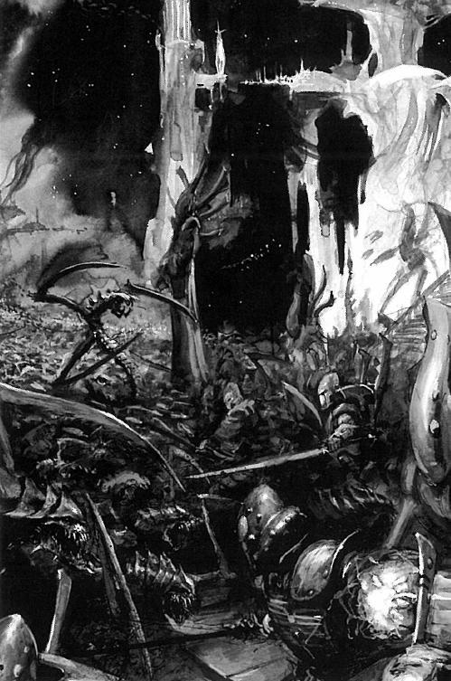
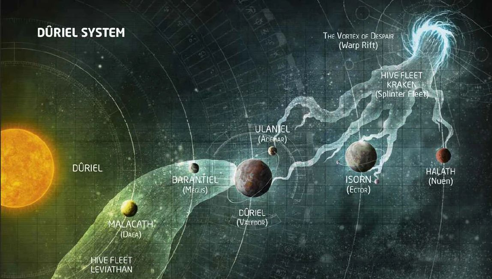

Hive Fleet Kraken
| Hive Fleet Kraken | |
|---|---|
| Cause of the Second Tyrannic War | |
 Craftworld defenders fighting Hive Fleet Kraken Artwork © Games Workshop | |
| Date | c. 990–993.M41 (main assault); splinter fleets active into the Era Indomitus |
| Location | Eastern Fringe, Ultima Segmentum; later the galactic core |
| Result | Main fleet broken at Iyanden and Ichar IV; hundreds of splinter fleets scattered |
| Belligerents | |
 Iyanden[b] Iyanden[b] Exiles of Yriel[c] Exiles of Yriel[c] T'au Empire[d] T'au Empire[d] | |
| Commanders and leaders | |
| Kelmon †[e]Yriel | |
| † Killed in action | |
| Strength | |
| Iyanden fleet[k] | |
| Casualties and losses | |
| 4 in 5 Iyanden killed[o]Kelmon killedHeavy T'au losses[p] | |
| Billions of civilians killed[q][r] | |
Hive Fleet Kraken was a Tyranid hive fleet that entered the galaxy along the Eastern Fringe in the last decade of the 41st millennium. Its assault, which the Administratum officially dated to 992.M41, is known as the Second Tyrannic War. Unlike the slow, single advance of Hive Fleet Behemoth half a century before, the Kraken split into hundreds of fast-moving tendrils that struck many worlds at once, and thousands of Imperial worlds were lost to it.[1][2]
The fleet's main strength was broken in 992–993.M41 at two places. At the hive world Ichar IV the Ultramarines under Marneus Calgar crushed a Genestealer rebellion and the swarms that came to feed on it, and at the craftworld Iyanden the Aeldari threw back the fleet's heaviest waves at the cost of most of their people. The surviving tendrils fled inward, towards the galactic core, where they remained a menace for decades. Imperial strategists now regard the Kraken as the forerunner of the larger invasion by Hive Fleet Leviathan that began in 997.M41.[1][3]
Background
[edit]The Imperium first met the Tyranids in 745.M41, when Hive Fleet Behemoth was destroyed at the Battle of Macragge. In the centuries after, the Inquisitor Kryptman, who had named the Tyranids after the first world they consumed, fought them in the service of the Ordo Xenos. The Kraken's tendrils had in fact been moving into the galaxy since at least early 990.M41, preceded, as with every hive fleet, by the Shadow in the Warp and by Genestealer infiltration of the worlds in its path.[1][s]
Course of the war
[edit]
Ichar IV
[edit]On Ichar IV, a hive world of the Eastern Fringe, a Genestealer Cult had grown in secret for generations. In 992.M41 it rose in open rebellion and seized much of the planet just as the Kraken arrived overhead. The Ultramarines, led by Marneus Calgar, landed to break the cult, then faced the full weight of a tendril of the hive fleet. The fighting was long, and it was won by a combination of the Ultramarines' assaults, the Imperial Navy's victories in orbit and the defenders' destruction of the hive ships' synaptic creatures. Ultramarines who fought there were later counted among the Chapter's Tyrannic War Veterans.[1][3]
Radnar and the Eastern Fringe
[edit]After Ichar IV, Imperial forces including the Justus regiments known as the Emperor's Shield were redeployed to the nearby hive world Radnar, where they burned out the Tyranid nests around Jourmall Hive in a six-week bombardment and armoured sweep. Elsewhere in 992.M41 Mephiston of the Blood Angels purged a Genestealer infestation from the hive world Hollonan, only for hive ships from a Kraken splinter fleet to arrive in the system as the last brood fell, and judged that his strike force lacked the numbers to hold against them.[3][4]
Iyanden
[edit]
Craftworld Iyanden learned of the Kraken from its Rangers in 992.M41. Farseer Kelmon called the whole craftworld to arms, woke the Avatar of Khaine and raised the spirits of its dead as wraith-constructs, a step that risked the souls of its ancestors. The craftworld's fleet defeated the first swarms but was ground down; later waves landed on the craftworld and took the Forests of Silence and the Shrine of Asuryan. The exiled Prince Yriel returned with his corsairs, broke the last waves in space, and then fought through the craftworld to destroy the swarm's Hive Tyrant. Iyanden survived, but four-fifths of its people were dead, Kelmon among them, and countless spirit stones were lost.[2][5]
The T'au
[edit]An outer wing of the fleet approached the Damocles Gulf in 991.M41 and struck the T'au Empire, which suffered heavy losses before driving it off.[2]
Aftermath
[edit]The losses at Ichar IV and Iyanden broke the Kraken's coordinated advance. Imperial and Aeldari scholars both concluded that the two victories depended on each other: had the Kraken not divided its strength between them, neither defence would have held. The scattered remnants fled towards the galactic core, past the defence lines built to stop them, and fed on poorly defended worlds far from the war zones. Running battles with these splinter fleets continued for many years.[1]
Kraken splinter fleets have been reported in the Era Indomitus. One struck the Mechanicus world Fecundia, where an Imperial garrison eventually drove it off; by 058.M42, after three decades without a confirmed Tyranid sighting, the world was declared cleansed.[6]
Imperial response
[edit]The speed of the Kraken's advance overwhelmed the Imperium's usual methods. Requests for aid from the Eastern Fringe took months to reach the Segmentum command at Macragge and the Ultramar fleets, and by the time a major task force had been raised, many of the worlds that had called for help had been consumed. The Departmento Munitorum raised new regiments in great numbers across the eastern Ultima Segmentum, and the Imperial Navy set up picket lines across the routes the tendrils had followed, with the aim of catching the swarms in the void before they could reach inhabited worlds.[3][7]
The Ordo Xenos drew three lessons from the war, which it circulated to Imperial commanders. The first was that Genestealer cults prepare the way for a hive fleet, and that an uprising like that on Ichar IV should be read as a warning of an approaching swarm. The second was that the Shadow in the Warp that precedes a fleet can isolate a world or a craftworld for weeks before the first creatures arrive, as it did at Iyanden. The third was that a hive fleet that has been broken is not destroyed: its scattered tendrils remain dangerous for decades, and may feed and grow again far from the original war zone.[1][2]
Imperial records count the cost of the Second Tyrannic War in thousands of worlds, most of them small or lightly defended colonies whose populations had no warning. Many were struck from the Administratum rolls without any record of their last days.[1]
Characteristics
[edit]The Kraken favoured speed and numbers. Its swarms were rich in fast creatures, Genestealers, Lictors and Raveners, and its tendrils moved independently, so that worlds were overrun before reinforcements could arrive. Its bioforms were usually coloured bone white with red, orange or brown carapace. Imperial tacticians drew from the war the lesson that the Tyranids could adapt their methods from one fleet to the next.[3][7]
Timeline
[edit]| Date | Event |
|---|---|
| 745.M41 | Defeat of Hive Fleet Behemoth at Macragge |
| Early 990.M41 | Kraken tendrils already within the Eastern Fringe |
| 991.M41 | An outer wing strikes the T'au near the Damocles Gulf |
| 992.M41 | Second Tyrannic War declared; Ichar IV rebellion; Hollonan; Iyanden |
| c. 993.M41 | The main fleet broken; splinter fleets flee towards the core[t] |
| 997.M41 | Arrival of Hive Fleet Leviathan |
| 058.M42 | Fecundia declared cleansed |
See also
[edit]Notes
[edit]- ^ Of Hive Fleet Kraken.
- ^ Craftworld Iyanden.
- ^ The exiles of Prince Yriel.
- ^ At the Damocles Gulf.
- ^ Kelmon was a Farseer of Iyanden.
- ^ The main fleet held several hive ships.
- ^ Estimated; Imperial records give no figure.
- ^ The cult of Ichar IV.
- ^ Estimated; Imperial records give no figure.
- ^ Under Marneus Calgar on Ichar IV.
- ^ Also the Avatar of Khaine and the wraith-constructs of its dead.
- ^ Known as "the Emperor's Shield", on Radnar.
- ^ Broken in 992–993.M41.
- ^ The scattered tendrils fled to the galactic core.
- ^ Four in five of its people were killed.
- ^ At the Damocles Gulf.
- ^ Estimated; Imperial records give no figure.
- ^ Thousands of worlds were lost.
- ^ The Administratum's date of 992.M41 marks the first confirmed loss of worlds; Ordo Xenos estimates of the fleet's arrival are earlier.
- ^ Estimated from the sequence of the Ichar IV and Iyanden campaigns.
References
[edit]- ^ a b c d e f g Mitchell, Sandy. The Greater Good (novel). Black Library, Chs. 1, 4-5, 15, 21-27. Mitchell, Sandy. Vainglorious (novel). Black Library, Ch. 1.
- ^ a b c d Codex: Tyranids (8th Edition), pg. 19. Games Workshop. Hoare, Andy. Rogue Star (novel). Black Library.
- ^ a b c d e Hoare, Andy. Star of Damocles (novel). Black Library. Hoare, Andy. Savage Scars (novel). Black Library.
- ^ Codex: Tau Empire (6th Edition), pp. 13, 28-29, 34, 41, 52. Games Workshop. Iyanden: A Codex: Eldar Supplement (6th Edition) (Digital Edition), pp. 45–47. Games Workshop.
- ^ Warhammer 40,000: Rulebook (6th Edition), pg. 175. Games Workshop. Codex: Blood Angels (5th Edition), pg. 17. Games Workshop.
- ^ Codex: Imperial Guard (5th Edition), pg. 24. Games Workshop. Codex: Tyranids (5th Edition), pp. 23-25. Games Workshop.
- ^ a b Codex: Tyranids (6th Edition) (Digital Edition), "Ichar IV". Games Workshop. Codex: Tyranids (4th Edition), pg. 59. Games Workshop.